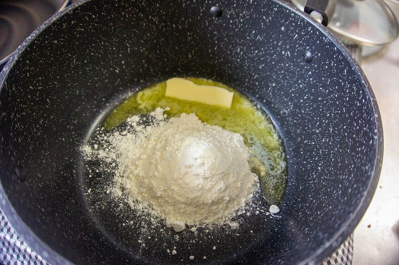
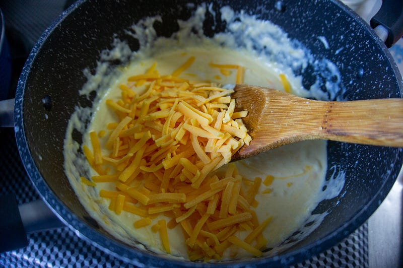
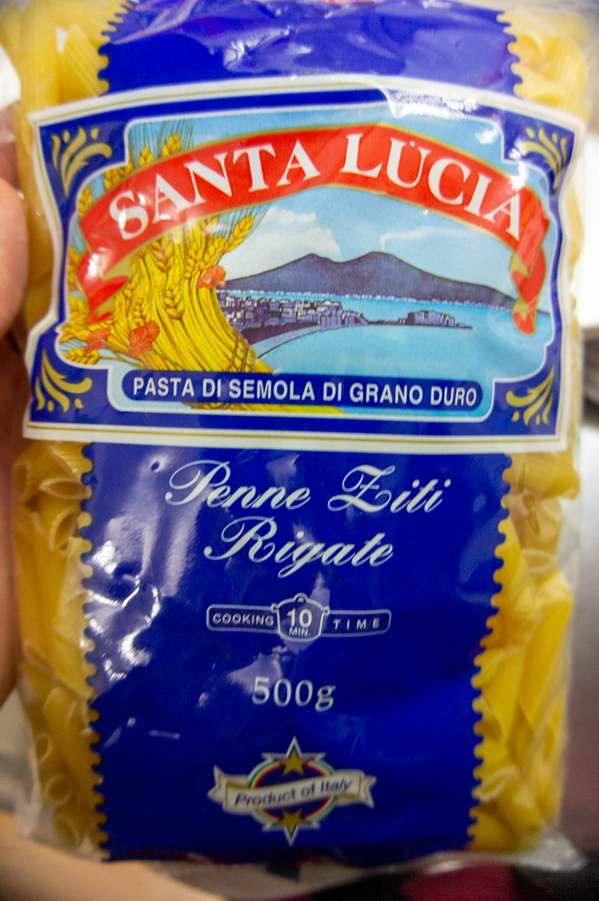
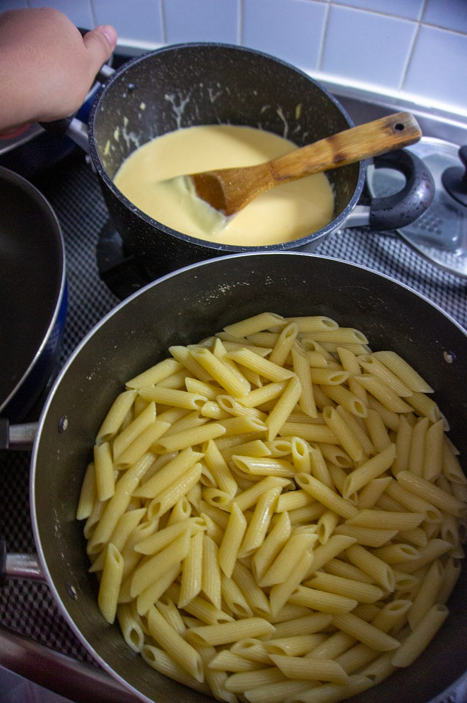
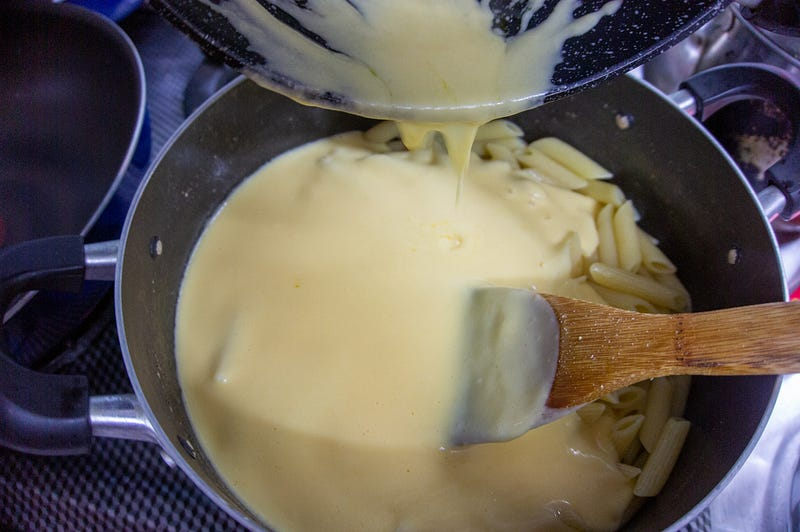
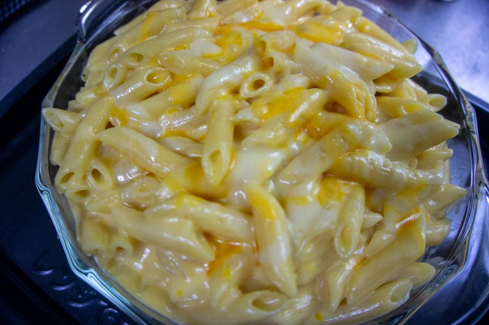
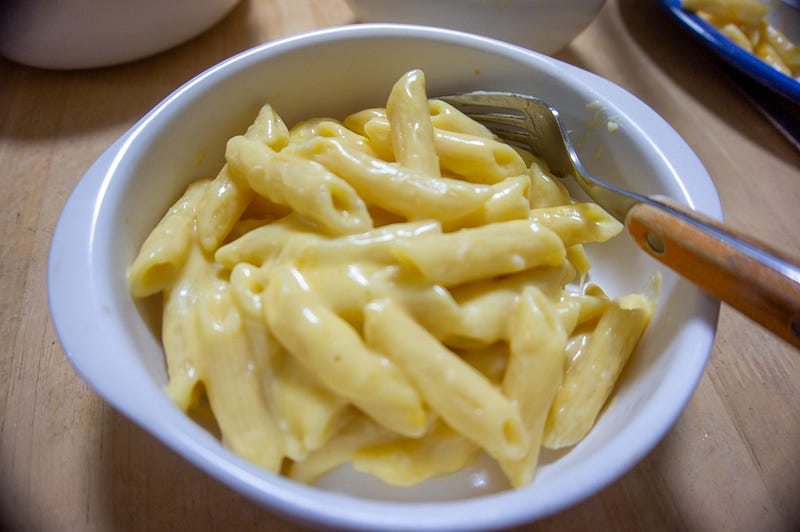

自家製Mac & Cheese（マカロニチーズ）を作る
自家製Mac & Cheese（マカロニチーズ）を作る
妻が「映画とかででてくる『マックアンドチーズ』という食べ物を食べてみたい」と言うので考えてみたら、Kraftの即席セット以外では作ったことなかったので自作してみることにした。
ちょっとだけ自分語りをさせてもらうと、２０世紀の最後の数年にアメリカで大学生だった自分は学費こそ親に出してもらってたものの、お金には大分困っていて、なおかつアメリカには学食なんてハイカラなものはなかったので、ちょっと遊興費（ゲフンゲフン）にお金を使ってしまうととにかく飯代に困っていた。
しかも外国人なのでバイトするにしても大学内でしかできない（労働ビザは持ってないからね！）。
そこで登場するのがKraft社製のMac & Cheeseである。
People may not have noticed that Kraft Mac & Cheese now has no artificial flavors, preservatives or dyes, but they will…www.kraftmacandcheese.com
今でもその商品が存在するのかは知らないけど、当時その一食分の箱が25セントだった。たったの25セント！5ドルあれば20食食える…！そんなわけで夏休みの間、ほぼ全ての飯をMac & Cheeseで過ごした事がある。
当時はもう二度とMac & Cheeseなんて食べたくないと思っていたけれど、あれからもう20年以上経っている。そろそろ食べたい、と実は僕も思っていた。というわけで作ります。
とは言えですよ。基本的には (1) チーズソースを作る (2) パスタに絡める。これだけです。
検索したらチーズソースには色々な流派があることはわかった。でも基本的には
- バター
- 乳製品（ミルク・エバミルク・生クリーム等）
- チーズ
- 塩等、香辛料
を混ぜれば良い。
今回はこのレシピをベースにやってみることにした。
This baked mac and cheese is a family favorite recipe, loved by both children and adults. It uses a combination of…www.thechunkychef.com
まずはベシャメルソースっぽいのを作ります。小麦粉とバター、生クリームと牛乳。あ、量は勘です。バターはアメリカンなレシピよりはぐっと抑えめ。火はずっと弱火推奨。

ベシャメルがとろりとしてきたところでチーズを投入。このチーズの種類もいろんな流派があって宗教戦争の元みたいな感じなんだけど、チェダーはハズレがなさそうなので、ハナマサで売っていたレッドチェダーと、家の冷蔵庫にあったピザ用ミックスをだいたい2:1の割合で使った。

基本的にはチーズを入れながら溶けるまでまぜる、様子を見る、必要であれば生クリーム・牛乳を入れてもう少し伸ばす、またチーズを入れる…を繰り返すだけ。チーズは多分全体量の1/3から半分弱くらいはいってるんじゃないかな。結構入ってる。
チーズの感じがいいぐらいになったら塩で味調整。どうせ少し煮詰まるから多分もう少ーしたりないかな？くらいの量にしておいた。
あとはパスタだけど、本当はマカロニにしたかったけど、マカロニは国産のものが150~200gで200円弱、輸入のペンネが500gで300円弱… というわけでペンネにした。穴も空いてるしショートパスタだし、まぁ似たようなもんだ。

量は悩んだけど、多分消費できるのは 300g、しかしソースは400gはいけそう… 残ったらレンチンすればいいし、ということで400g。
ゆであがった。ソースも温めたし、塩も調整して良い感じ。はい、いくよー。

だばー

最後に耐熱皿にうつして、チーズをぱらりぱらり。220℃のオーブンで10分くらい。本当は焼き色がつくまでやりたかったんだけど、子供達がうるさいので、チーズが溶けたところの4分くらいで提供。


むふーん… チーズ…
子供達もパクパク食べていた。ちなみに写真には撮ってないけど、つけあわせはブロッコリとトマト、あと子供達が万が一パスタを気に入らない時の保険で鶏肉ソテー（皮目をパリパリにして塩胡椒しただけ）も用意したんだけど、これがMac & cheeseにすごくあっていて良かった。
もちろんさすがに全部食べられないので、鶏肉もマカロニ… ペンネも残してまた明日食べます。
やってみたらすごく簡単だし、チーズが好きならいやになるほどチーズが食べられるのでおすすめです。
なお、今回の反省点としては、ちょっとベシャメル成分が多かったのと、無駄に日本人的な感性を発揮してバターを少なめにしてしまったこと。多分粉を少なくしてもっとバターを多くしたほうがねっとりしつつもさらっとして本物のMac & Cheeseっぽくなると思う。